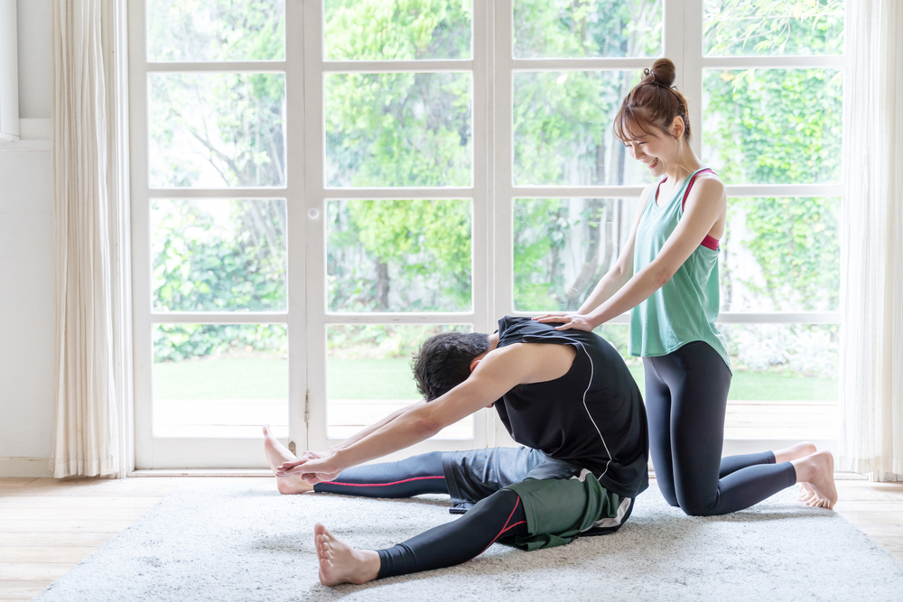

カップリング
筋トレ&ストレッチサークル
Pathos
〜パトス〜
いろいろな恋人候補と。
スキンシップを通じた相性確認をしてみたい。
恋してワクワクした気持ち。
もっと感じたい。
一度きりの人生。
異性との交流をもっと楽しみたい。
- パトスはそんな思いを持つ男女のための、触れ合って感じる恋活マッチングサークルです。
- スキンシップを通じて相手との相性確認をする点が特徴です。
- 「 Don't think , Feel！ 」
積極的にパートナーを作らない理由として、
こんな風に思っていませんか？
積極的にパートナーを作らない理由として、こんな風に思っていませんか？
-
「 収入、ステータスがない 」
パトスは、身体を使ったコミュニケーションで相性確認をしたい男女のサークルです。
目的は五感を使って相性確認を楽しむこと。収入やステータスは関係ありません。 -
「 忙しい、継続して会うのは大変 」
パトスの恋活は、その時マッチングしたお相手と " 短時間のアフター " を重ねる形式です。
気が向いた時、気分転換時など、貴方の望む時に気軽に参加してください。 -
「 会話が苦手 」
パトスは、スキンシップをメインにしたサークルです。
思いやりのある行動と楽しむ気持ちがあればそれで十分。
無理せずありのまま、あなたらしく。そのためのパトスです。
サークル活動時間内のメニュー
-
〜 カップル筋トレ＆ストレッチ 〜
参加者の男女でペアになり、スキンシップによるコミュニケーション " カップル筋トレ＆ストレッチ " を行います。
男女で触れ合って行うストレッチにより、非日常感の中で恋活ができます。
また、
普段一人では運動が継続できない方でも、パトスに来れば「楽しく」筋トレが継続できる上、"運動 × 異性とのふれあい" 効果でホルモンが分泌されることにより、「ストレス解消」や「美肌効果」などの若返り効果も期待大！？
-

-
〜 マッチング 〜
マッチングタイムでは、アフターしたいお相手にオファーを出していただけます。
アフターとは、イベント終了後、外で会って更に相性確認をすることをいいます。
オファーは何人に出していただいても構いません。
マッチングが成立するとアフターが可能となります。
マッチング成立の条件
- お互いにオファーを出していた場合
- 相手からのオファーを了承した場合
アフターで使う時間の目安としては、1〜２時間くらいが良いでしょう。
- 複数人マッチングした方は、それぞれで会うスケジュールを決めてアフターをすることになります。
-
オファーは何人に出していただいても構いませんが、もしそのまま複数のマッチングが成立してしまった場合でも、後からどれかをキャンセルする等はできません。
お相手あってのことですので、その点ご注意の上オファーしてください。
恋する女性がキレイになる理由とは？
-
恋する女性のキレイの秘密は、実は "女性ホルモン" にあります。
恋をしている女性を見ると、お肌がツヤツヤで見た目も洗練され、「キレイになったな」って感じることありますよね。
具体的には、自然と痩せてきたり、肌や髪がキレイになったり。
精神的な安定や、自分磨きをしようという向上心が高まったり。
恋愛をしておらずホルモンの分泌がない状態と比べたら、身心に及ぼす影響は全然違います。
気持ちが明るく、前向きな女性はやっぱりキレイに見えるし、輝いて見えます。
女性の美しさや精神状態は、脳内から分泌されるホルモンと切っても切れない関係にあります。
-
女性ホルモンの種類と役割は？
-
エストロゲン
-
"女性らしい体つき" になる
エストロゲンは通称「美人ホルモン」ともいわれています。エストロゲンの分泌によって、女性の体形に変化を起こしてくれます。
乳腺細胞が増殖するのでバストアップにつながり、女性らしいウエストのくびれを作ってくれて、魅力的なボディラインが出来上がります。 -
肌や髪の毛に潤いを与えてくれる
エストロゲンの増加によって、代謝を促し女性の肌や髪の毛がツヤツヤになります。
エストロゲンが「美肌ホルモン」とも呼ばれる理由です。
女性として一番のアピールポイントになる髪や肌がキレイになるのは嬉しい効果です。 -
自律神経をコントロールしてくれる
自律神経が乱れていると女性の体には、のぼせ、冷え、肩こりなどの悪影響があります。
エストロゲンが分泌されていると自律神経の乱れがなくなり精神的にも落ち着き、体調も整います。
自律神経が整っていて精神的に安定している女性は外見だけでなく中身まで魅力的に映ります。
-
-
フェニルエチルアミン
-
女性にうれしい "美肌効果"
フェニルエチルアミンは恋愛ホルモンと言われている物質の1つで、女性の肌をきれいに見せてくれる効果があります。
食べ物ではチーズにこのフェニルエチルアミンが含まれています。チーズが好きな人は恋愛を重視する人が多いというデータも。 -
消化を助けて "お通じが良くなる"
消化を促進する効果があるフェニルエチルアミンは、分泌によって女性が悩みがちな便秘も解消してくれる効果があります。
便秘が解消されるとお腹もスッキリしてスリムな体形に。にきびもできにくくなり、お肌の調子も整います。 -
知らない間に痩せられる
フェニルエチルアミンが働くと精神的に「恋に落ちている」と錯覚します。
そうなると、食欲の他に欲が向いた状態になり自然と痩せられます。人が恋をすると痩せるという効果は、ホルモンの働きも関係しています。
-
-
ドーパミン
-
"やる気" が起きる
ドーパミンは「快感ホルモン」とも言われていて、感動したり、ドキドキ、ワクワクしたり、ときめいたり、おなかの底から笑ったりすると脳内にドーパミンが分泌されます。
ドーパミンの分泌により新しいことに挑戦してみようという意欲が沸いてきたり、勉強や仕事のやる気が起きるという効果があります。
勉強や仕事に必要な記憶力もドーパミンが使われます。 -
"ダイエット効果" が期待できる
やる気や集中力を高めてくれるドーパミンは、精神的に快感に支配されている状態なので、空腹を感じにくくなります。
ドーパミンの分泌が繰り返されるとそれほど多くは食べなくてもいい身体になります。 -
精神的に感動を感じられるようになる
ドーパミンは精神的な部分に働くホルモンです。
快感や喜び、それに感動を感じやすくなり感受性が豊かになります。遊園地の乗り物に乗って興奮やスリルを感じるのもドーパミンの働きが大きいです。
-
-
セロトニン
-
精神的に安定する
セロトニンには精神を安定させる役割があり、イライラしたり憂鬱になったりする気持ちをコントロールしてくれます。
いつもイライラした女性は魅力が半減。精神的に平常心を保ち、相手に安心感を与えられたら女性としての魅力はさらにアップします。 -
質の高い睡眠を促す
セロトニンは睡眠を促すホルモン「メラトニン」の原料にもなっていて、セロトニンが増えることにより質の良い睡眠が得られるという効果があります。
逆にセロトニンの量が減ると、睡眠の質が下がったりといった症状も出たりします。 -
頭の回転が速くなる
セロトニンは脳を活発に働かせてくれる脳内ホルモンです。
頭の回転を高めてくれるので勉強や仕事の処理能力がアップします。直観力も高まるので、この人だ！と思える男性を見極める能力も身に付けることができるかもしれません。
-
-
オキシトシン
-
心が落ち着き幸福感を得られる
オキシトシンは出産や育児に関わりがあるホルモンとして知られていました。
お母さんが赤ちゃんに授乳するときもオキシトシンが分泌されます。人との触れ合いを通してオキシトシンが分泌されると幸福感を感じ精神的に安定します。 -
社交的な性格になる
オキシトシンの働きにより、人との関わりを積極的に持とうとする気持ちが生まれます。
他者への信頼感も高まり、他者と親密に関わろうとするようになります。社交的で人当たりのいい女性は好感度も高いですね。 -
ストレスを解消してくれる
ペットとの触れ合いによってオキシトシンが分泌されると、飼い主が抱えていたストレスも一気に解消してくれるという研究結果もあるほど、ストレスに効果的なホルモンです。
ストレスは美肌に大敵です！オキシトシンのパワーを利用してストレスフリーを目指しましょう。
-
-
-
女性ホルモンで最高の「美活」を
こんなに素晴らしい効果のある女性ホルモン。誰もが持っていてしかもフリー。
活用しないなんてもったいない。
恋活で積極的に分泌させて、楽しみながら美しくなりましょう。

持ち物
-
ヨガウェア等
スポーツレギンス / スパッツ 等
ストレッチ＆筋トレに相応しい格好足は裸足でおこないます
-
マスク
コロナ対策のためマスク着用でのご参加をお願いします
-
水分補給用ドリンク
水筒orキャップ付きペットボトル
-
汗拭きタオル、着替え等
-
スマホ
オファーなどに使用
- 
活動場所
-
JR津田沼駅 徒歩３分
-
千葉県習志野市津田沼1-2-23
アイダビル４Ｆ - 貸スタジオ
入会、参加、アフターの流れ
-
入会申込み前に 送金&メッセージアプリ
" pring（プリン）"
のダウンロード及び登録を済ませておいていただきますようお願いします。 -

-
１）Pathosに入会する
-
メインページ下部の、
"入会する（無料）" より申込む。申込者のpring(プリン)アプリに、パトス事務局より友達申請が届きます。
それを承認し入会完了！
-
-
２）イベントに参加する
-
画面右上のメニュー内、
" 開催日＆参加申込み " から申込んで参加承認通知を待つ。参加承認通知は、
申込み順に、男女で対になるたび順次 pring(プリン)で通知します。参加申込みは開催日の前日中までは受付けますので、通知があるとすれば遅くとも開催日の前日中までに届きます。
参加承認通知が届いたら、
pringで参加費 500円 をパトス事務局へお支払いいただき、参加決定となります。参加承認通知がなければ、
その回は参加無し（or開催無し）となります。イベント活動当日は楽しく親交を深め、希望者はマッチングタイムでオファーが可能です。
オファーの結果はイベント終了後、できるだけ早くpringで通知します。
-
＜P.S＞
イベントで一度会ったお相手であれば、後日でも気が向いた時にアフターのオファーを出していただけます。
オファーは、メイン画面右上のメニュー内 " オファー " からお願いいたします。
事務局がpringを使用して仲介しマッチングに協力します。積極的にアフターを重ねてみましょう。
オファーを受けた方は返事をすることとなっていますが、
もし当日含め３日以内に返事がなければ、オファーはキャンセルとなります。
-
-
３）アフターで自由恋愛
-
イベント終了後、マッチングが成立した会員様同士でそのままアフターへどうぞ。
各々ご自由に相性確認の続きをお楽しみください。アフターが終了しましたら、
メイン画面右上のメニュー内 " アンケート " にご回答いただき完了となります。アンケートの回答はアフター当日中までにお願いいたします。
-
-

皆様のご参加、お待ちしております！